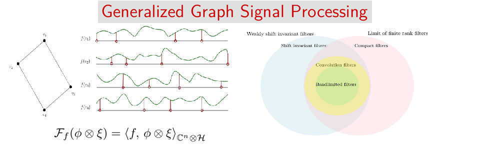

We are a research group headed by Professor Wee Peng Tay, based in the School of Electrical & Electronic Engineering, Nanyang Technological University. Our main research interests are in network information and signal processing, with particular emphasis in network inference and estimation techniques, distributed signal processing, social learning, machine learning, applied probability and statistics.
Members
Biographies of group members.
Research Projects
Selected projects.
Information
- Internships. If you are interested in undergraduate internship opportunities, please apply through one of the Inbound Programmes. I am sorry that I am unable to respond to such requests individually.